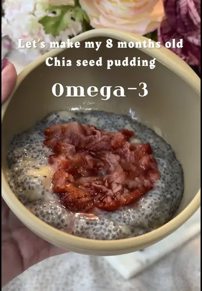

Chia seed pudding for my 8 months old baby

Ingredients
- banana
- 2 tablespoons chia seeds
- breast milk
- formula
Steps
- And it's so easy to add it in your baby's diet.
- For this recipe, you're gonna need 1 ripe banana, 2 tablespoons chia seeds, mash the mixture, then add half cup breast milk or formula.
- After it's soaked, you can either serve it like that or blend it if your baby likes smoother texture.
- For extra vitamin C, I am adding a strawberry on top.
From the video's narration and on-screen text, by @soniamazri on TikTok. Open original